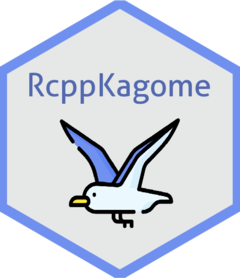

RcppKagome 
‘Rcpp’ Interface to Kagome
About
Interface to ikawaha/Kagome; Self-contained Japanese morphological analyzer written in pure Go.
Installation
remotes::install_github("paithiov909/RcppKagome")Usage
res <- RcppKagome::kagome("にわにはにわにわとりがいる")
print(res)
#> [[1]]
#> [[1]]$`1`
#> [[1]]$`1`$Id
#> [1] 53040
#>
#> [[1]]$`1`$Start
#> [1] 0
#>
#> [[1]]$`1`$End
#> [1] 1
#>
#> [[1]]$`1`$Surface
#> [1] "に"
#>
#> [[1]]$`1`$Feature
#> [1] "助詞" "格助詞" "一般" "*" "*" "*" "に" "ニ"
#> [9] "ニ"
#>
#>
#> [[1]]$`2`
#> [[1]]$`2`$Id
#> [1] 80172
#>
#> [[1]]$`2`$Start
#> [1] 1
#>
#> [[1]]$`2`$End
#> [1] 3
#>
#> [[1]]$`2`$Surface
#> [1] "わに"
#>
#> [[1]]$`2`$Feature
#> [1] "名詞" "一般" "*" "*" "*" "*" "わに" "ワニ" "ワニ"
#>
#>
#> [[1]]$`3`
#> [[1]]$`3`$Id
#> [1] 58916
#>
#> [[1]]$`3`$Start
#> [1] 3
#>
#> [[1]]$`3`$End
#> [1] 6
#>
#> [[1]]$`3`$Surface
#> [1] "はにわ"
#>
#> [[1]]$`3`$Feature
#> [1] "名詞" "一般" "*" "*" "*" "*" "はにわ" "ハニワ"
#> [9] "ハニワ"
#>
#>
#> [[1]]$`4`
#> [[1]]$`4`$Id
#> [1] 53999
#>
#> [[1]]$`4`$Start
#> [1] 6
#>
#> [[1]]$`4`$End
#> [1] 10
#>
#> [[1]]$`4`$Surface
#> [1] "にわとり"
#>
#> [[1]]$`4`$Feature
#> [1] "名詞" "一般" "*" "*" "*" "*" "にわとり"
#> [8] "ニワトリ" "ニワトリ"
#>
#>
#> [[1]]$`5`
#> [[1]]$`5`$Id
#> [1] 19676
#>
#> [[1]]$`5`$Start
#> [1] 10
#>
#> [[1]]$`5`$End
#> [1] 11
#>
#> [[1]]$`5`$Surface
#> [1] "が"
#>
#> [[1]]$`5`$Feature
#> [1] "助詞" "格助詞" "一般" "*" "*" "*" "が" "ガ"
#> [9] "ガ"
#>
#>
#> [[1]]$`6`
#> [[1]]$`6`$Id
#> [1] 6652
#>
#> [[1]]$`6`$Start
#> [1] 11
#>
#> [[1]]$`6`$End
#> [1] 13
#>
#> [[1]]$`6`$Surface
#> [1] "いる"
#>
#> [[1]]$`6`$Feature
#> [1] "動詞" "自立" "*" "*" "一段" "基本形" "いる" "イル"
#> [9] "イル"res <- RcppKagome::kagome(c("庭に埴輪に輪と李がいる", "庭には二羽鶏がいる"))
res <- RcppKagome::prettify(res)
head(res)
#> Sid Surface POS1 POS2 POS3 POS4 X5StageUse1 X5StageUse2 Original Yomi1
#> 1 1 庭 名詞 一般 * * * * 庭 ニワ
#> 2 1 に 助詞 格助詞 一般 * * * に ニ
#> 3 1 埴輪 名詞 一般 * * * * 埴輪 ハニワ
#> 4 1 に 助詞 格助詞 一般 * * * に ニ
#> 5 1 輪 名詞 一般 * * * * 輪 ワ
#> 6 1 と 助詞 並立助詞 * * * * と ト
#> Yomi2
#> 1 ニワ
#> 2 ニ
#> 3 ハニワ
#> 4 ニ
#> 5 ワ
#> 6 トCode of Conduct
Please note that the RcppKagome project is released with a Contributor Code of Conduct. By contributing to this project, you agree to abide by its terms.
License
Copyright (c) 2020 Kato Akiru
Released under the MIT license https://github.com/paithiov909/RcppKagome/blob/master/LICENSE
Kagome is licensed under the Apache License v2.0 and uses the MeCab-IPADIC, UniDic dictionary/statistical model. See NOTICE.txt for license details.
Icons made by Freepik from www.flaticon.com.